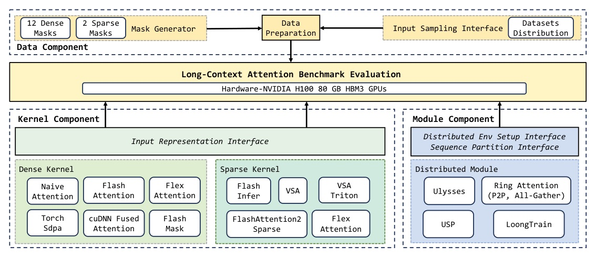
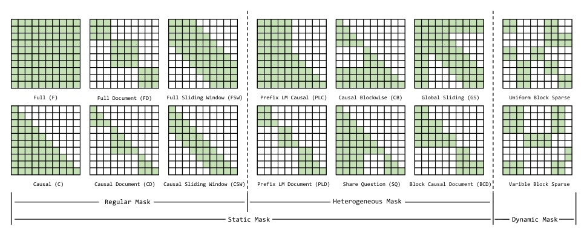
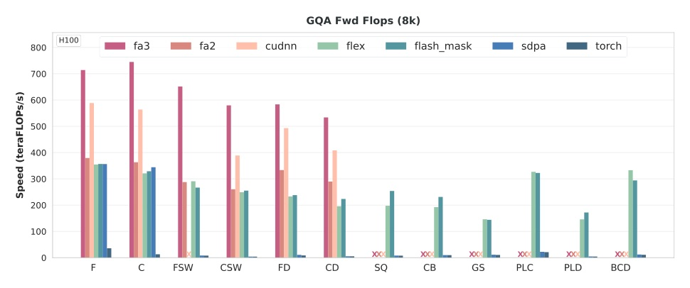
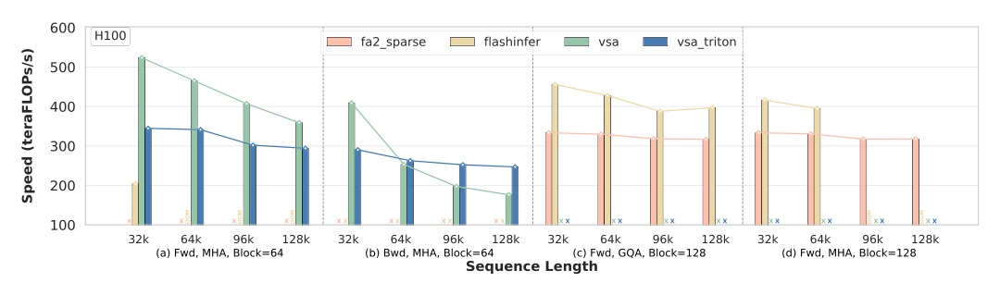
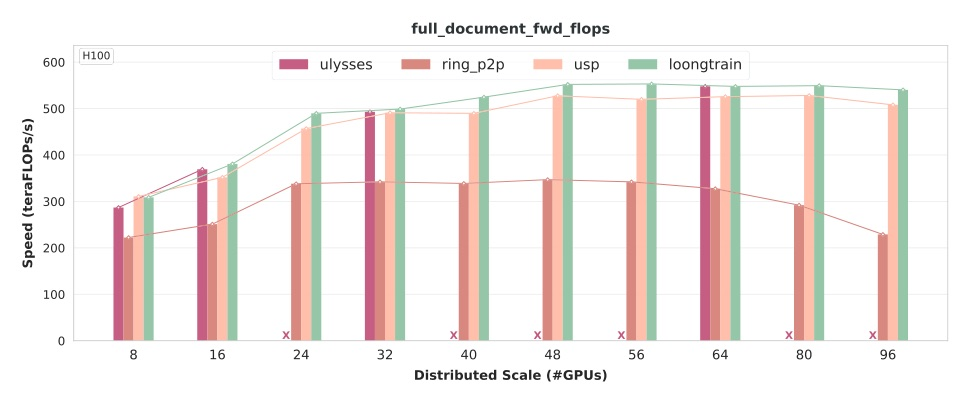
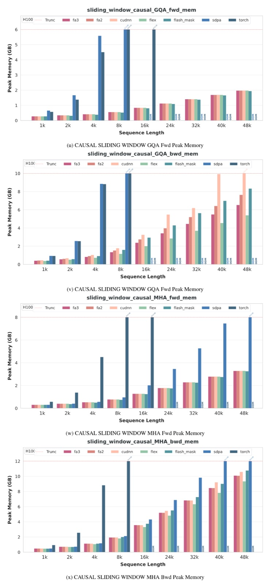

論文：Long-Context Attention Benchmark: From Kernel Efficiency to Distributed Context Parallelism · arXiv 2510.17896 · 程式碼 github.com/NJUDeepEngine/LongCA-bench
選題說明：今日 arXiv 清單的頂會 accepted 論文都不是計算加速主題；首選的 NeurIPS 2026 poster〈The Kernel Reality Check〉抓不到 PDF（OpenReview 403、無 arXiv 版），所以改選這篇 ICLR 2026 poster · Reviewer 資料：未取得
選長上下文 attention，mask 形狀與硬體比演算法名氣更關鍵：FA3 在 Hopper 上最快，但不支援 6 種 heterogeneous mask；sparse kernel 在 block size、backward、GQA 上各缺一角；分散式方面，USP / LoongTrain 這類 hybrid 在 96 GPU 仍能維持穩定吞吐。


Dense 取樣
Sparse 取樣
| Mask | Naive / SDPA | FA2 / FA3 | cuDNN | FlexAttn | FlashMask |
|---|---|---|---|---|---|
| F / C / FSW / CSW / FD / CD | ✓ | ✓ | ✓ | ✓ | ✓ |
| SQ / CB / GS / PLC / PLD / BCD | ✓ | ✗ | ✗ | ✓ | ✓ |
| Kernel | Mask | Fwd/Bwd | Block | GQA | GPU | 效能 | 記憶體 |
|---|---|---|---|---|---|---|---|
| VSA | Uniform | Both | 64 | ✗ | ≥sm90 | High | Low |
| Triton VSA | Uniform | Both | 64 | ✗ | ≥sm80 | Medium | Low |
| FA2 Sparse | Uniform | Fwd | 128 | ✓ | ≥sm80 | Medium | Low |
| FlexAttention | Both | Both | 任意 | ✓ | ≥sm80 | Low | High |
| FlashInfer | Both | Fwd | 任意 | ✓ | ≥sm80 | Medium | Medium |
VSA 是給 video diffusion 用的 ThunderKittens kernel；FlashInfer 把 block sparse 轉成 page size 1 的 paged attention 格式。
重建時加上的最佳化：TransformerEngine 式 head-to-tail 重排達成負載平衡、double buffering、multi-stream、varlen 輸入加上預先計算 metadata；backend 用 FA3 / cuDNN。CP 目前只支援 F / C / FD / CD 四種 mask。

s² 項來自 attention 矩陣；tensor parallel 與 data parallel 都消不掉這項，只有沿 sequence 切的 context parallel 能分攤（A.4.2）。

| Kernel（GQA 64:8 fwd） | Seqlen | B64 · SR0.5 | B128 · SR0.5 |
|---|---|---|---|
| FlashInfer | 16K | 236.30 | 449.79 |
| FlashInfer | 64K | 210.82 | 427.77 |
| FlashInfer | 128K | 195.61 | 396.90 |
| FA2 Sparse | 64K | ✗ | 329.88 |
| FA2 Sparse | 128K | ✗ | 317.11 |

| 情境 | 論文的發現 |
|---|---|
| Hopper + regular mask | FA3 最快；cuDNN 次之，但要留意 GQA + FSW 不支援 |
| Heterogeneous mask（SQ / PLC / BCD…） | 只能用 Flex / FlashMask；FlashMask 較快但覆蓋較窄 |
| 要訓練的 block sparse | 只有 VSA / Triton VSA 有 backward（block 64、不支援 GQA） |
| 推論端 block sparse | FlashInfer（block 越大越快，block 小時注意 OOM） |
| 跨節點 CP | USP / LoongTrain；Ulysses 受 head 數整除限制 |
此頁為編者推論，與論文內容分開標示。
Attention operators differ significantly in their support for mask patterns, and even the same operator can exhibit substantial performance variation across masks.
各 attention 運算子支援的 mask 差異很大，而且同一個運算子在不同 mask 下效能也可能差很多。§1, p.2
Performance in block sparse attention is significantly improved through specialization ... Meanwhile, the backward pass remains a major bottleneck.
Block sparse attention 的效能靠專門化才大幅提升……同時，backward 仍是主要瓶頸。§3.2, p.8
Ring P2P communication is mask-independent, always transferring in a fixed ratio of D/N ... meaning performance depends entirely on the amount of computation workload.
Ring P2P 的通訊與 mask 無關，每輪固定傳 D/N……所以效能完全取決於計算量。§3.3, p.9

來源：Long-Context Attention Benchmark: From Kernel Efficiency to Distributed Context Parallelism · arXiv 2510.17896 · ICLR 2026 · github.com/NJUDeepEngine/LongCA-bench